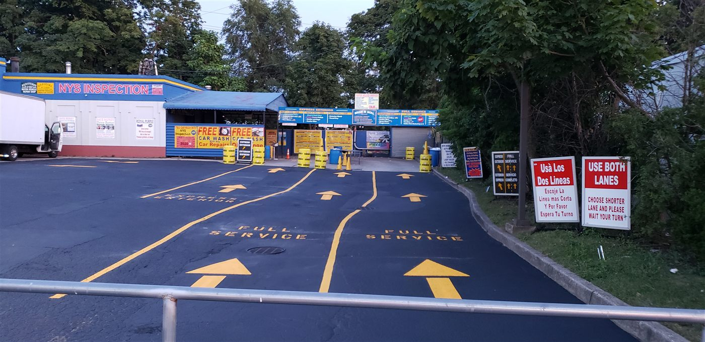
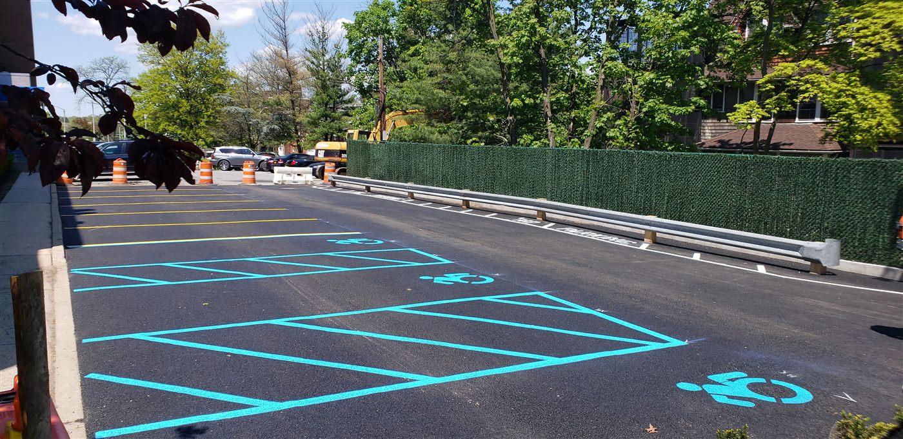

It is the first question we get on almost every call, and it is a fair one. You want a number before you commit. The honest truth is that no reputable striping company can hand you an exact price over the phone without knowing your lot, but we can absolutely explain how pricing works, what moves the number up or down, and how to budget with confidence. That is what this post is for.
What drives the price
Two parking lots that look about the same size can carry very different price tags. Here is what actually determines the cost of a striping or restriping job on Long Island.
1. The number of stalls and total layout
The biggest driver is simply how much paint has to go down. A standard stall takes a set amount of line. Add up all the stalls, drive lanes, arrows, crosswalks, and curb markings and you have the real scope. A small retail strip is a very different job than a big box store or a multifamily complex with several connected lots.
2. Restripe versus new layout
Repainting over faded lines that are still visible (a straight restripe) is the most economical job because the layout already exists. Laying out fresh lines on new asphalt, or redesigning a lot to fit more cars or meet current code, takes measuring, chalking, and planning time, so it costs more. If you are unsure which you need, our post on when to restripe your parking lot walks through the signs.
3. Paint type
Standard traffic paint is the workhorse for most commercial lots and is included in a typical quote. Thermoplastic and high durability coatings cost more up front but last far longer under heavy traffic, which can be the smarter spend for a busy lot. We help you weigh that on site.
4. ADA and specialty markings
Accessible spaces, access aisles, van accessible stalls, crosswalks, fire lanes, and stencils all add detail work beyond straight stalls. They are not expensive individually, but a fully compliant, fully marked lot involves more than lines. Our ADA compliance guide covers what New York lots are required to have.
5. Surface condition and scheduling
A clean, sound surface paints fast. A lot that needs sweeping, or one that has to be done overnight so a business never loses a space, changes the labor. We offer night and weekend work, and for many owners the zero downtime is worth every penny.


How to think about budget
Rather than fixating on a single per stall number, think in terms of value. A faded, confusing lot quietly costs you every day. When drivers cannot read the lines they spread out, and a lot built for 200 cars ends up holding 160. Fresh, clear striping recovers that capacity, protects you from ADA liability, and tells every customer you run a professional operation. Against that, a restripe is one of the highest return, lowest cost improvements you can make to a commercial property.
"Great company, showed on time! Did a very good job and much better striping than my previous company. Will definitely recommend." Amir Konin · Google Review · ★★★★★
The only way to get a real number
Every honest quote starts with a look at the lot. We come out, measure, count the stalls, note the ADA and specialty work, check the surface, and give you a clear, competitive price with no surprises and no pressure. The estimate is free, and we serve every town across Suffolk County, Nassau County, and New York City.
The cost of not restriping is almost always higher than the cost of restriping.
WANT AN EXACT NUMBER FOR YOUR LOT?
Free, no obligation striping and restriping estimates across Long Island and NYC. We measure, you decide.